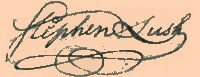

by
Stefan Bielinski
Stephen Lush was born about 1753. He may have been the son of Manhattan skipper and privateer William Lush.
He was educated at Kings College - receiving a bachelor of arts degree in 1770 and a masters degree in 1773. He then clerked for New York attorney William Smith, Jr. Admitted to the bar in 1774, twenty-one-year-old Stephen Lush relocated to Albany to practice law. In Albany, he joined his brother Richard, a businessman and future land speculator, in a house in the second ward. Both Lush brothers would settle in Albany - making the future state capital their home for life!
His budding legal career soon was interrupted by the War for Independence. In 1776, he was elected to the Albany Committee of Correspondence as a member from the second ward. By 1777, he had become the aide-de-camp (secretary) to General George Clinton and remained in that position when Clinton became Governor of New York State in 1778. He was also commissioned a captain of a Ranger company; then major, and finally brigade major. Serving in the action around New York City, he was captured by the British and held for some time before being exchanged. A detailed pension application later described his extensive wartime service!
Lush married Lydia Stringer in 1781. By 1798, seven of their children had been baptized in Albany churches. By 1790, his family was living in a large, new home on Market Street that adjoined the mirror-image dwelling/office of his father-in-law, physician Samuel Stringer.
Appointed clerk of the court of chancery in 1778, in 1792 he was elected to the state Assembly and then, in 1800, to the New York State Senate.
Stephen Lush was a longtime slaveholder who maintained the practice until almost 1820. His Albany household had five slaves in 1810. In 1819, he sold the "time" of service of "Thomas, a negro boy . . . born 9/13/1799" to his father, Albany skipper Thomas Allicott!
Stephen Lush died in April 1825 at the age of seventy-two. His will divided an extensive estate among his wife and six surviving children. A large monument in Albany Rural Cemetery commemorates his distinguished life!

notes
 Sources: The life of Stephen Lush is CAP biography
number 416. This profile is derived chiefly from
family and community-based resources. His public service and land dealings represent major areas of research opportunity. A substantial pension application for Revolutionary war service further articulates his career.
Sources: The life of Stephen Lush is CAP biography
number 416. This profile is derived chiefly from
family and community-based resources. His public service and land dealings represent major areas of research opportunity. A substantial pension application for Revolutionary war service further articulates his career.
Signature from an oath of secrecy he signed in January 1777. Printed in Minutes of the Albany Committee of Correspondence.
first posted: 10/20/02; last revised 6/5/03